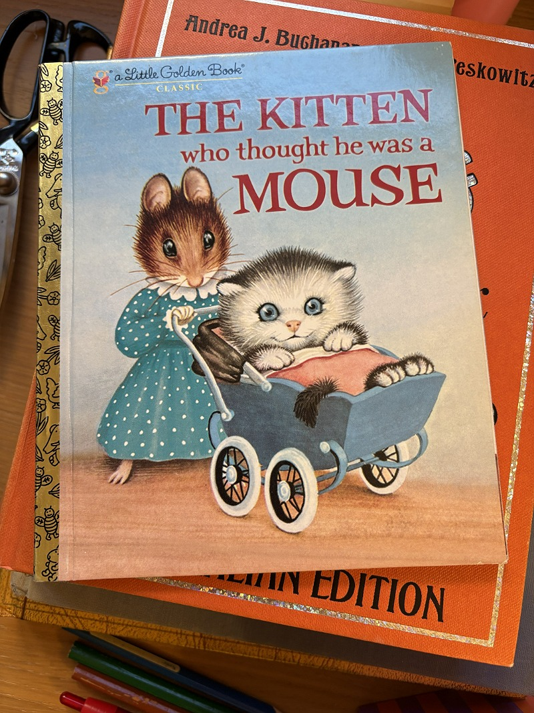
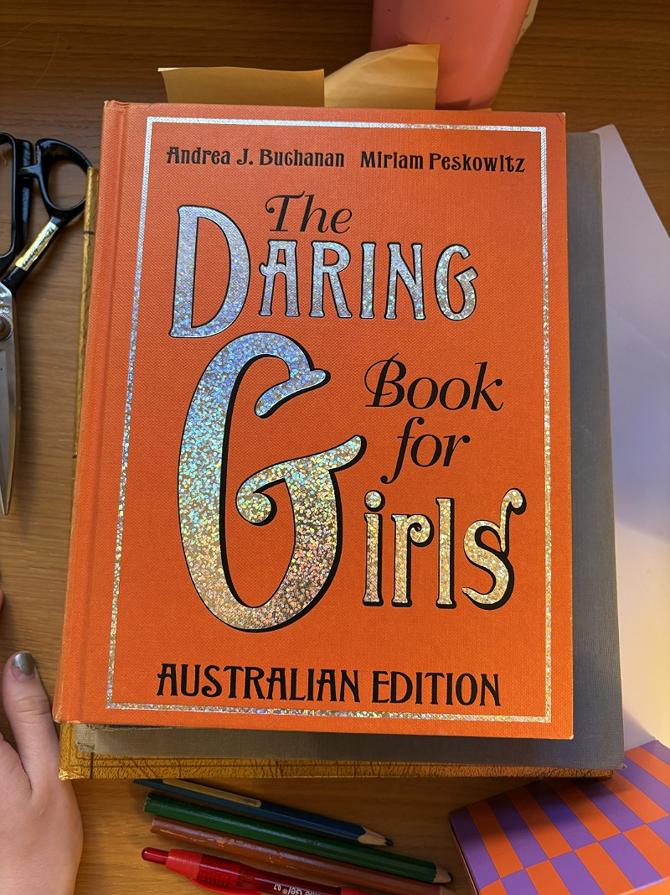
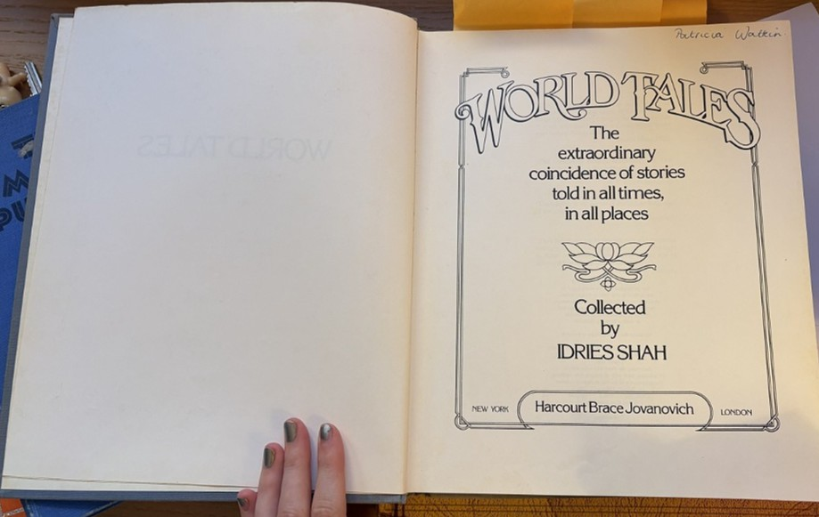
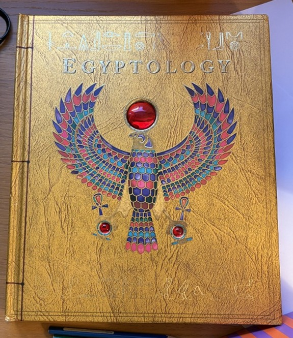

Part of my research involved me realising that I kept trying to find news perspectives through which to view my childhood. And so I took to my book shelf and pulled down the old editions that I was raised on. This meant going through many of my mum's childhood books as well, including one called World Tales by Idries Shah, which is a remarkable collection that puts side by side, fables from all over the world. The epigraph even contains a quote from Joseph Campbell; "The folk-tale is the primer of the picture-language of the soul."
The collection also includes classics like an illustrated edition of The Magic Pudding and The Faraway Tree with the original illustrations. I think this could be a really interesting form to play within for the printed element of my project. I remember the sense of wonder and possibility I had when I was young and reading through these incredible classics, and I would like my audience to feel this too. It's a feeling I still get when I'm looking at the books now.
One book that was definitely mine, and not my mother's, is Dugald Steer's Egyptology. This was part of a series produced by the author that included my favourite book ever, Dragonology, which somehow made me believe that, since Egypt was real, the existence of Dragonology proved that Dragons were real too. The luxurious covers, interactive pages and popus and dense information/illustrations, were enough to keep my glued to these books for hours and hours. I would love to make something that does the same for someone else. Side note, Dugald Steer seems like an interesting person, whose website explains has recently dived into coding and web design along side his teaching, writing and translation work! #awesome
click here to visit dugald's website




